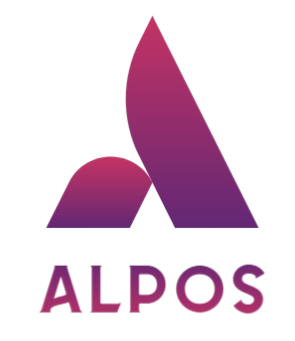

IA & Data Science
Conception de modèles de Machine Learning appliqués à la santé.
Étudiant ingénieur · IA & E-santé
Étudiant en 4e année à ISIS Castres, spécialisé en Intelligence Artificielle et Systèmes d'information en santé. Je conçois des solutions alliant IA, données et e-santé pour améliorer les parcours de soins.
Portfolio en cours d'évolution — n'hésite pas à revenir bientôt pour découvrir de nouveaux projets.
À propos
Je suis étudiant ingénieur en 4e année à ISIS Castres, spécialité Intelligence Artificielle. Je m'intéresse particulièrement à l'application de l'IA et de la data pour améliorer la santé, les workflows hospitaliers et le quotidien des soignants.
Au travers de projets académiques et d'expériences professionnelles en milieu hospitalier, je développe une double compétence technique (ML, Python, architectures e-santé) et métier (IAM, SI hospitaliers, ergonomie des postes de travail).
Compétences
Conception de modèles de Machine Learning appliqués à la santé.
Compréhension des architectures SI hospitalières et des workflows métier.
Développement d'applications et déploiement de solutions techniques.
Travail en équipe pluridisciplinaire et coordination en environnement hospitalier.
Projets
Une partie de mes projets académiques et personnels autour de l'IA, du web et de l'e-santé.
Rôle : Développeur principal
Participation à la Nuit de l'Info avec la réalisation d'une application web autour du thème « Village Numérique Résistant ». Conception de l'interface, intégration responsive et mise en place de fonctionnalités interactives.
Le projet met en avant la résilience numérique d'un village connecté, avec un souci d'ergonomie et d'accessibilité.
Rôle : Développeur IA

Divers projets menés dans le cadre de ma formation à ISIS : analyse de données, prototypes de tableaux de bord en santé, mini-applications web et travaux dirigés autour des systèmes d'information de santé.
Ces projets me permettent d'explorer à la fois la partie algorithmique (ML, data) et la mise en production (architecture, déploiement, UX).
Expériences
Avril – Juin 2025 · Castres
Thématique : Systèmes d'information & IAM
Stage PlaniTime – 2026 · Castres
Sujet : Jumeau numérique & interface tangible
Mai 2023
Manutention & traitement de matériaux
Contact
Intéressé(e) par un stage, une collaboration autour de l'IA en santé ou simplement envie d'échanger ? Laisse-moi un message.
Je suis ouvert aux opportunités de stage, alternance ou projets autour de l'IA, de la data et de l'e-santé.